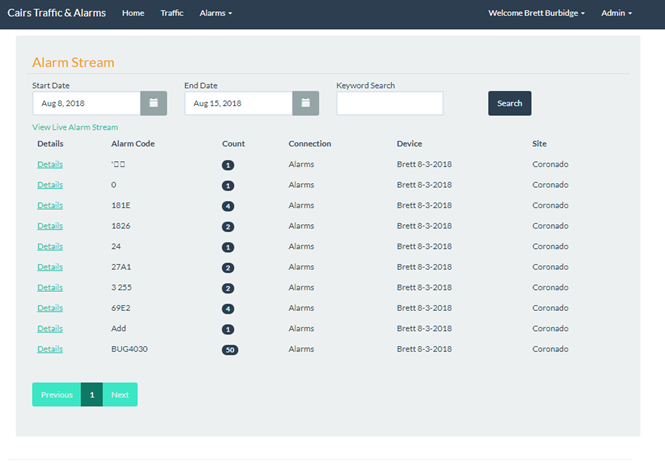
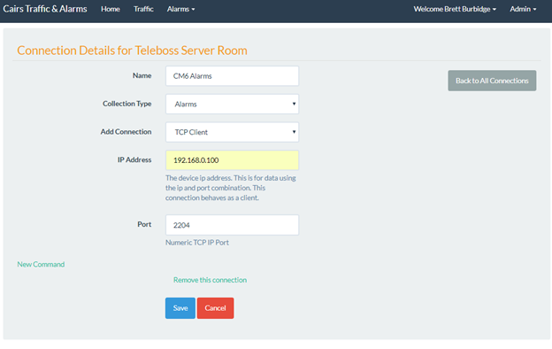
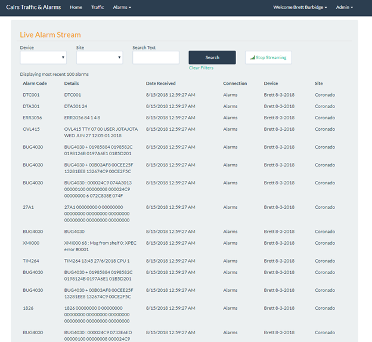

Alarm Stream¶
Authors: Brett Burbidge
Streaming Alarm Page¶
Navigate to Alarms/Alarm Stream. This will show a summary view of all the alarms received in a time frame.
Alarm Details Page¶
Shows the details of a specific alarm. Click on the Detail link in the previous page to see this.
Streaming Alarm Page Shows alarms as they are streaming in for each switch. They can select search criteria and also pick the Device and Site as filters. To get to this page click the View Live Alarm Stream link.
Setup¶
- Add a Device
Select Admin and select Devices
Select New Device
Note: A Device in this case is a Teleboss. Each Teleboss in Rota will need to be added as a Device and each will need one connection for Alarms.
Determine which Teleboss to add first and in the Name field add the name of the Teleboss.
In the Site field select the site you just added.
Press the Save button.
Add a new Connection
- Connections are the way that Devices connect and gather information.
In the Device selected above click on the Connections button
Select the New Connection button
Name: [Device Name] TCP Connection
Collection Type: Alarms
Add Connection: TCP Client
IP Address: The IP of the Teleboss
Port: The port of the serial file we are trying to read data from. Typically this is 220x with x being the file number.
A new command will automatically be created for this type of connection.
Click Save and you are done creating a Device!!
Do this for the remaining Telebosses on site. [this might be done already]
We will NOT be creating connections for Traffic Data. Traffic data will be read out of the Cairs Call